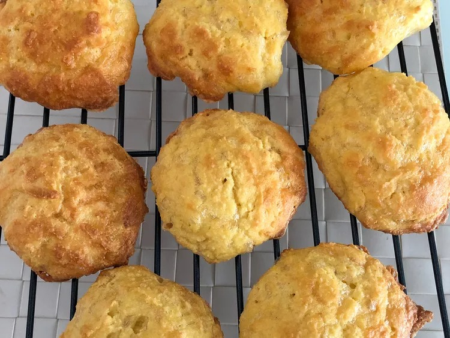

Cheesy Keto Biscuits

Description
Large keto biscuits that are very substantial and filling.
- 2 cups almond flour
- 1 tablespoon baking powder
- 2 1/2 cups shredded cheddar cheese
- 4 eggs
- 1/4 cup half-and-half
Steps
- Preheat the oven to 350 degrees F (175 degrees C). Line a baking sheet with parchment paper.
- Combine almond flour and baking powder in a large bowl. Mix in Cheddar cheese by hand. Create a small well in the middle of the bowl; add eggs and half-and-half to the center. Use a large fork, spoon, or your hands to blend in the flour mixture until a sticky batter forms.
- Drop 9 portions of batter onto the prepared baking sheet.
- Bake in the preheated oven until golden, about 20 minutes.